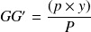

Rappel des effets d'un mouvement de charge sur la position du centre de gravité
Définition générale
Nous avons vus précédemment que lorsqu'on déplace une charge de poids p sur un navire, le centre de gravité de l'ensemble G (navire + colis) se déplace en G' :
dans le même sens que le colis
d'une distance qui peut être calculée par la formule :
Cette formule peut utilisée dans les trois directions :
verticale
horizontale transversale
horizontale longitudinale
Déplacement vertical d'un colis
Déplacement vertical d'un colis
La formule ci dessus appliquée à un mouvement vertical d'un colis devient :

p : poids du colis en (tonne)
P : poids du navire avec le colis (en tonne)
z : distance sur laquelle on a déplacé verticalement le colis en mètre (par convention z>0 vers le haut ; z<0 vers le bas)
GG' : distance sur laquel le centre de gravité du navire se déplace ( en mètre)
Cela signifie que sur un navire de déplacement 100 tonnes, si l'on déplace de 2 m vers le haut un colis de 15 tonnes, le centre de gravité du navire se déplace vers le haut :
La nouvelle hauteur par rapport à la quille XG' du centre de gravité peut donc être calculée par la formule :
Si le centre de gravité se trouvait à 2 m (XG) , cela signifie que sur un navire de déplacement 100 tonnes (P), si l'on déplace de 2 m vers le haut (z) un colis de 15 tonnes (p), le centre de gravité du navire se se trouve après mouvement en XG' :
Déplacement horizontal transversal d'un colis
Déplacement horizontal transversal d'un colis
La formule ci dessus appliquée à un mouvement vertical d'un colis devient :

p : poids du colis en (tonne)
P : poids du navire avec le colis (en tonne)
y : distance sur laquelle on a déplacé horizontalement le colis en mètre (par convention y>0 vers bâbord ; z<0 vers tribord)
GG' : distance sur laquelle le centre de gravité du navire se déplace (en mètre)
Cela signifie que sur un navire de déplacement 100 tonnes, si l'on déplace de 3 m vers bâbord un colis de 15 tonnes, le centre de gravité du navire se déplace vers bâbord :
La nouvelle distance du centre de gravité (YG') par rapport à l'axe longitudinal du navire peut donc être calculée par la formule :
Si le centre de gravité se trouvait à 0,5 m sur Babord (YG), cela signifie que sur un navire de déplacement 100 tonnes (P), si l'on déplace de 3 m vers Bâbord (y) un colis de 2 tonnes(p), le centre de gravité se trouve après mouvement en (YG') :
Récapitulatif
Fondamental :
Direction du mouvement du colis | sens du mouvement | distance du mouvement | GG' | XG' | YG' |
Vertical | vers le haut | z>0 | YG ne change pas | ||
Vert le bas | z<0 | ||||
horizontal | Vers Babord | y>0 |  | XG ne change pas | |
Vers Tribord | y<0 |